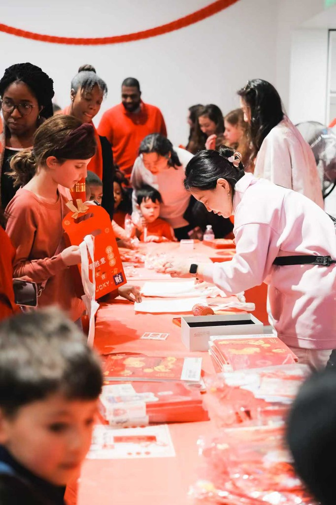
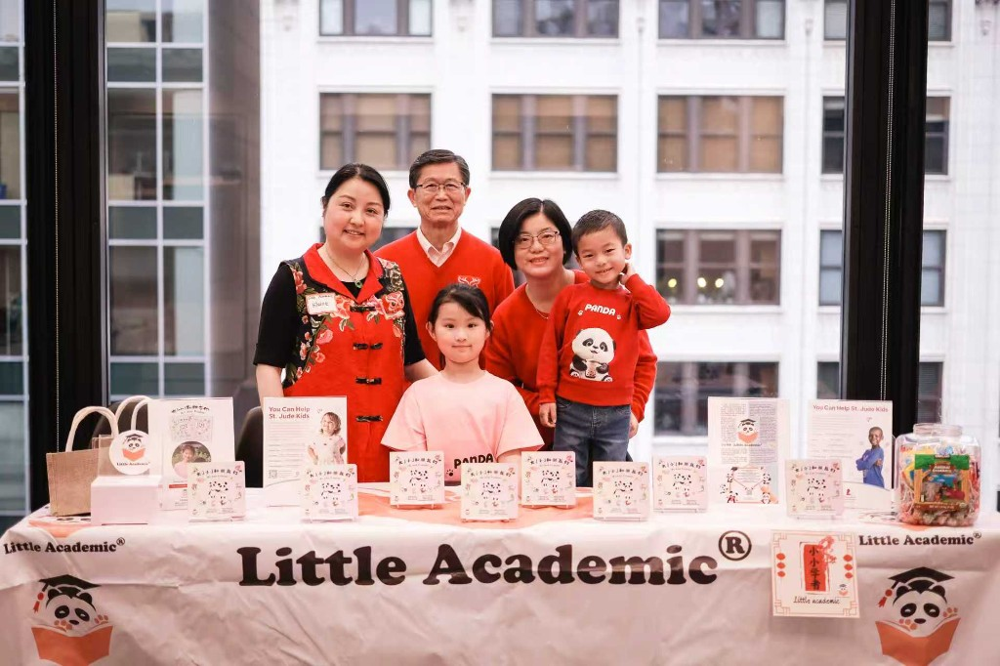
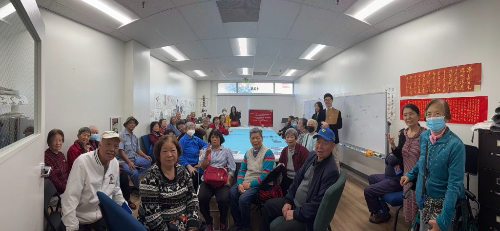
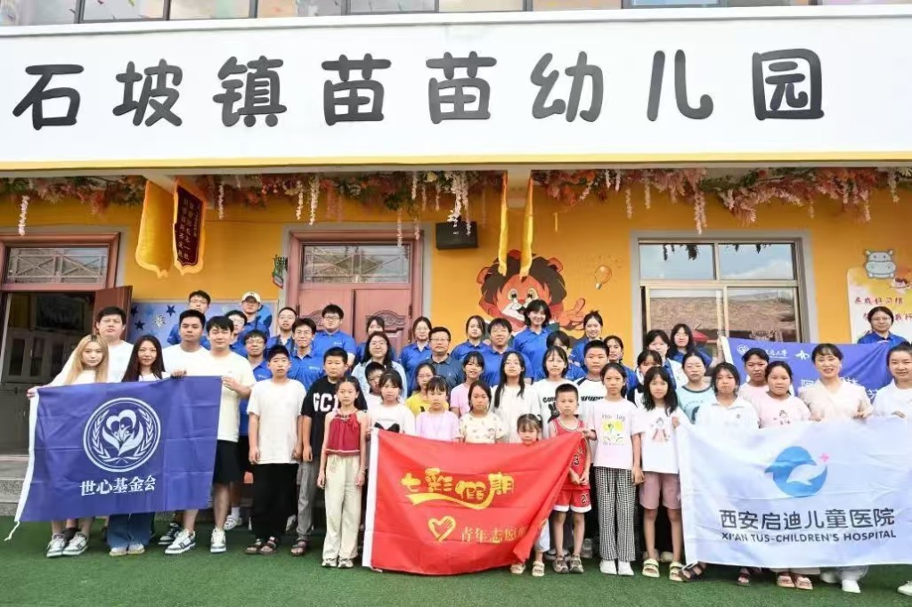
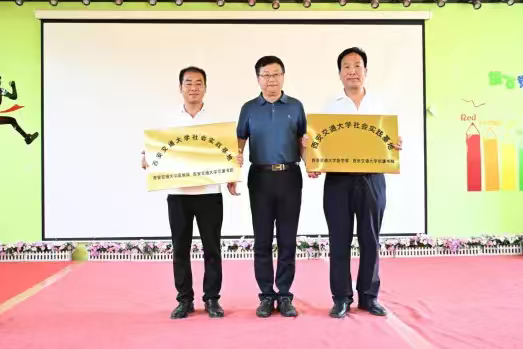

Ecosystem
The Curator of Meaning.
Sustaining civilization, humanizing diplomacy, and building psychological bridges in a fragmented world.
The Manifesto
We live in an era of fragmentation where borders are hardening and the human mind is under unprecedented pressure. In a globalized world, cultural depth is the ultimate luxury. Shi Xin operates at the vital intersection of Cultural Psychology and International Public Diplomacy. We do not just manage cultural projects; we are the architects of civilization narratives. By translating traditional wisdom—such as the concepts of harmony, balance, and interconnectedness—into universal solutions for modern psychological crises, we ensure that cultural heritage remains a living, breathing asset for the future.
Methodology: The MINDSBRIDGE Framework
MINDSBRIDGE is our core strategic framework for international engagement. We reject one-way cultural export in favor of building two-way “psychological bridges.” Through immersive narrative experiences, high-concept cultural projects, and international intellectual salons, we foster social resilience, mitigate cross-cultural conflicts, and project a constructive, human-centric global narrative.
Cultural Playgrounds (Washington, D.C.): Bridging the Social Divide
In the heart of U.S. politics, Shi Xin created a space of “Silent Equality.” We brought together children from Capitol Hill policymaker families and recently resettled refugee families. By engaging them in the non-verbal art of traditional Chinese calligraphy, linguistic and social barriers dissolved. This shared cultural experience fostered humility in elite youths and restored a vital sense of agency and safety for vulnerable immigrants, proving culture's power as a catalyst for social cohesion.


Life & Legacy: Cultural Medicine for the Aging Soul (Southern California)
Addressing the global crisis of elderly isolation, Shi Xin integrated traditional life philosophies and narrative therapy into Western senior care systems. Through seasonal sensory experiences—such as herbal sachets during traditional festivals—and guided life-review storytelling, we awakened memories and alleviated the psychological anxiety of aging. This project demonstrated the soft power of traditional wisdom in modern global social governance.

Domestic Practice: Psychological Empowerment in Rural Revitalization
Shifting the focus from material aid to mental empowerment, Shi Xin partnered with top medical universities to bring “embodied cognition” therapies to vulnerable children in rural areas. Through physical mindfulness practices like traditional weaving and collaborative sports, we helped reconstruct their self-identity and social trust, establishing a sustainable, long-term psychological support mechanism.


Shi Xin builds psychological bridges through immersive narrative experiences, high-concept cultural projects, and international intellectual salons. We work across communities, public venues, and local institutions—turning cultural heritage into a living asset that strengthens social resilience and reduces cross-cultural conflict.